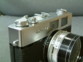
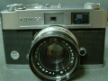

器材库 > 胶片袖珍相机（PS） > Auto S2
暂无图片
规格总览
发布日期
1965
产品类型
35mm旁轴取景照相机
使用胶卷/胶片
35mm
画幅
24 x 36mm
停产
是
镜头及对焦
镜头
HEXANON 45/1.8，55mm滤镜口径（螺纹式）
镜头结构
6片/4组
光圈范围
f/1.8-f/16
曝光控制
测光系统
CdS
测光范围
1.7EV~17EV
快门
COPAL SVA 自动快门
快门速度
1 - 1/500秒，B门
取景规格
取景器
Side-illuminated bright frame with automatic compensation for parallax and picture angle
取景放大倍率
0.65倍
过片系统
胶卷计数
自动复位型，连续指示
其它规格
尺寸
138×82.2×73.5mm
重量
750g
yakfolk2010-05-18 14:574.33 分
操作性 4.50功能性 4.00美观性 4.50趣味性 4.50耐用性 4.50性价比 4.00
xjvan2003-02-14 17:373.42 分
操作性 3.00功能性 3.50美观性 3.50趣味性 3.50耐用性 3.50性价比 3.50
goodbrother2002-11-28 14:51

goodbrother2002-11-28 14:474.58 分
操作性 4.50功能性 4.50美观性 5.00趣味性 4.00耐用性 5.00性价比 4.50

goodbrother2002-11-28 14:46

该产品暂无存档的产品图
评测 / 相关文章
该产品暂无存档的评测文章